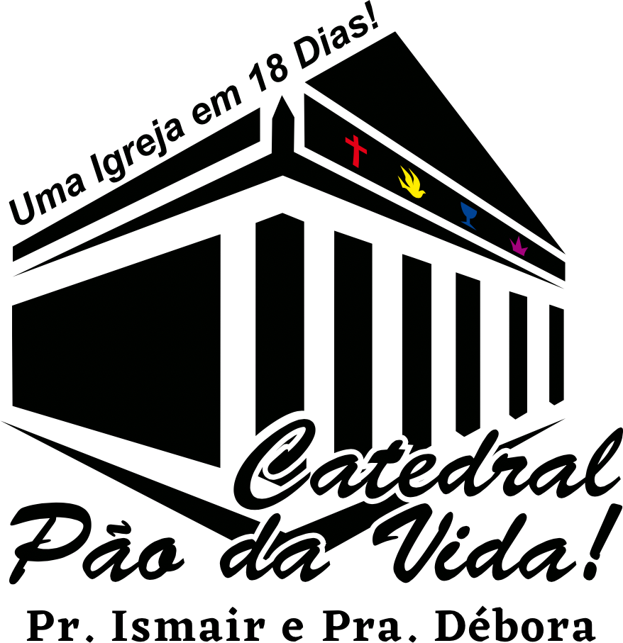

Terças-feiras20h
TerçaToda terça, às 20h
Terça da Vitória
Um culto de fé no meio da semana, para orar, ouvir a Palavra e sair com a vitória nas mãos.
Igreja do Evangelho Quadrangular no litoral do Paraná. Cultos às terças, quartas e domingos — e o app da igreja na palma da mão.
Se é a sua primeira vez, a gente te espera na porta. Se já é da casa, a agenda, as escalas e os pedidos de oração estão no app.
Três cultos por semana em Balneário Ipanema, com ministério infantil para os pequenos de 0 a 5 anos.
Ver horários dos cultos
Agenda, escalas do louvor e do diaconato, Bíblia, pedidos de oração e ofertas por Pix. Abre direto no navegador.
Abrir o appNa terça à noite, na quarta à tarde e no domingo com toda a família. Chegue uns minutinhos antes: tem sempre alguém para te receber.
Um culto de fé no meio da semana, para orar, ouvir a Palavra e sair com a vitória nas mãos.

Uma pausa no meio da tarde para quem quer estar na presença de Deus com calma, oração e louvor.

Cada domingo do mês tem um tema:
A igreja fica em Balneário Ipanema, Pontal do Paraná. Abra a rota direto no seu aplicativo de mapa.
Uma igreja Quadrangular à beira-mar, em Balneário Ipanema, onde a mesa está posta, a Palavra é pão, e quem chega encontra lugar e uma família para caminhar junto.
Dos pequenos de 0 a 5 anos aos casais: cada grupo tem líderes, agenda e conversa própria dentro do app.


…a igreja continua no seu bolso.
Tudo o que acontece na igreja num lugar só: para quem visita, para quem serve e para quem lidera.
Funciona direto no navegador do celular, sem baixar nada.



Trace a rota pelo Google Maps ou pelo Waze, chame a gente no WhatsApp ou acompanhe os cultos nas redes.